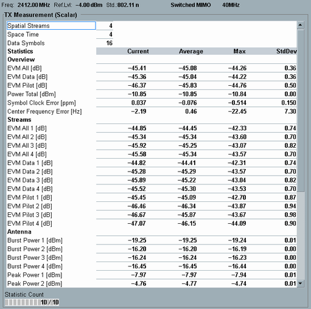

View TX Measurement (Scalar) for SMIMO (802.11n, ac, ax)
The view contains a table of statistical results.

Switched MIMO scalar results
The table provides the following general and overall results:
- "MCS Index": Modulation and coding scheme index, determining, for example the modulation type, coding rate and number of spatial streams. For overview tables, see IEEE 802.11-2012, section 20.6.
Because the coding rate of HE TB PPDUs is not signaled, the MSC index of HE TB PPDU cannot be displayed. - "Spatial Streams", "Space Time": number of spatial streams NSS and space-time streams NSTS, see also "MIMO Signals"
- "Data Symbols": number of OFDM symbols in the payload of the measured burst
- EVM: error vector magnitudes for all subcarriers (data and pilot), for data subcarriers only and for pilot subcarriers only
- "Power Total": power of the overall signal
- Symbol clock error
- Carrier frequency error
Results per stream:
- Modulation scheme and coding rate (only R&S CMW100/CMW with MUA)
- "EVM All", only available if NSS=NSTS
- "EVM Data" measured per spatial stream
- "EVM Pilot" measured per space-time stream
Results per antenna (only R&S CMW100/CMW with MUA except where stated):
- "Power Backoff": minimum distance of signal power to reference level since the start of the measurement
The backoff result helps you to configure optimum values for the expected power and the user margin.
The result is not yet displayed on the GUI, but available via remote command. - "Burst Power": RMS value over the entire burst, including preamble and payload (also R&S CMW500/2xx with BB Meas)
- "Peak Power": peak value over the entire burst, only available up to 40 MHz bandwidth
- Crest factor, only available up to 40 MHz bandwidth
- I/Q origin offset (also R&S CMW500/2xx with BB Meas)
- "DC Power": power of the DC subcarriers (center frequency)
- "Gain Imbalance": absolute value of (1 + I/Q imbalance)
- "Quadrature Error": angular component of (1 + I/Q imbalance)
For query of the results via remote control, see:
For additional information, refer to "Common View Elements".